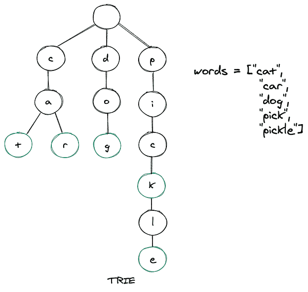

TRIE 数据结构示例
原文：https://www.studytonight.com/advanced-data-structures/trie-data-structure-explained-with-examples
A Trie 是一种高级数据结构，有时也被称为前缀树或数字树。它是以有序和高效的方式存储数据的树。我们通常使用“T4”来存储字符串。trie 的每个节点可以有多达 26 个引用(指针)。
trie 的每个节点由两件事组成:
一个角色
布尔值用于实现该字符是否代表单词的结尾。
一般来说，try 用于存储英文字符，因此每个字符可以有 26 个引用。trie 中的节点不存储整个键，而是存储键的一部分(通常是字符串的一个字符)。当我们从根节点向下遍历到叶节点时，我们可以从密钥的这些小部分构建密钥。
让我们通过插入一些单词来建立一个 trie。下面是同样的图示，我们有 5 个单词，然后我们把这些单词一个接一个地插入我们的 trie。

如上图所示，当我们从根节点向下遍历到叶节点时，可以形成关键字(单词)。可以注意到，绿色突出显示的节点代表单词的endOfWord布尔值，这又意味着该特定单词在该节点完成。此外，trie 的根节点是空的，因此它可以引用 trie 用来存储的字母表的所有成员，并且 trie 的任何节点的子节点最多可以有 26 个引用。尝试在本质上是不平衡的，不像 AVL 树。
为什么要使用 Trie 数据结构？
当我们谈论从数据结构中检索值的最快方法时，散列表通常会出现在我们的脑海中。虽然本质上非常高效，但与散列表相比，仍然很少被提及， trie 比散列表高效得多，而且它们还具有几个优势。主要是:
不会有任何冲突，从而使最差的性能优于没有正确实现的哈希表。
不需要散列函数。
trie 中字符串的查找时间为
O(k)，其中 k =单词的长度。当单词不在一个 trie 中时，它可能需要更少的时间。
实施尝试:
我们将用 Java 语言实现 Trie 数据结构。
三节点声明:
class TrieNode {
boolean isEndOfWord;
TrieNode children[];
public TrieNode(){
isEndOfWord = false;
children = new TrieNode[26];
}
}
请注意，我们在上面的 TrieNode 类中有两个字段，如前所述，布尔 isEndOfWord 关键字和一个名为 children 的 Trie 节点数组。现在让我们初始化 trie 类的根节点。
TrieNode root;
public Trie() {
root = new TrieNode();
}
trie 数据结构中有两个关键功能，它们是:
搜索
插入
在三中插入:
当我们在 trie 中插入一个字符(键的一部分)时，我们从根节点开始，然后搜索一个引用，该引用对应于我们试图在 trie 中插入其字符的字符串的第一个键字符。两种情况是可能的:
如果存在一个引用，那么我们沿着树向下遍历引用到下一个子级。
引用不存在，然后我们创建一个新节点，并使用与当前关键字符匹配的父引用来引用它。我们重复这个步骤，直到我们到达密钥的最后一个字符，然后我们将当前节点标记为结束节点，算法完成。
考虑下面的代码片段:
public void insert(String word) {
TrieNode node = root;
for (char c : word.toCharArray()) {
if (node.children[c-'a'] == null) {
node.children[c-'a'] = new TrieNode();
}
node = node.children[c-'a'];
}
node.isEndOfWord = true;
}
在 trie 中搜索:
trie 中的一个键被存储为从根节点开始的路径，它可能一直到叶节点或某个中间节点。如果我们想在 trie 中搜索一个关键字，我们从根节点开始，然后向下遍历。如果我们找到了要搜索的关键字的下一个字符的引用匹配，那么有两种情况:
存在下一个字符的引用，因此我们沿着这个链接向下移动，并继续搜索下一个关键字符。
下一个字符不存在引用。如果钥匙没有其他字符存在，并且该字符被标记为
isEndOfWord = true，那么我们返回 true ，这意味着我们找到了钥匙。否则，还有两种情况是可能的，在每种情况下，我们都返回 false 。这些是:键中还有一些关键字符，但是由于路径终止，我们无法向下遍历，因此键不存在。
键中没有剩余字符，但最后一个字符没有标记为
isEndOfWord = false。因此，搜索关键字只是我们试图在 trie 中搜索的关键字的前缀。
考虑下面的代码片段:
public boolean search(String word) {
return isMatch(word, root, 0, true);
}
public boolean startsWith(String prefix) {
return isMatch(prefix, root, 0, false);
}
public boolean isMatch( String s, TrieNode node, int index, boolean isFullMatch) {
if (node == null)
return false;
if (index == s.length())
return !isFullMatch || node.isEndOfWord;
return isMatch(s, node.children[s.charAt(index) - 'a'], index + 1, isFullMatch);
}
方法startsWith()用于查找 trie 中是否存在所需的密钥前缀。还有，无论是search()还是startsWith() 的方法都利用了isMatch() 的方法。
整个代码:
class Trie {
class TrieNode {
boolean isEndOfWord;
TrieNode children[];
public TrieNode(){
isEndOfWord = false;
children = new TrieNode[26];
}
}
TrieNode root;
public Trie() {
root = new TrieNode();
}
public void insert(String word) {
TrieNode node = root;
for (char c : word.toCharArray()) {
if (node.children[c-'a'] == null) {
node.children[c-'a'] = new TrieNode();
}
node = node.children[c-'a'];
}
node.isEndOfWord = true;
}
public boolean search(String word) {
return isMatch(word, root, 0, true);
}
public boolean startsWith(String prefix) {
return isMatch(prefix, root, 0, false);
}
public boolean isMatch( String s, TrieNode node, int index, boolean isFullMatch) {
if (node == null)
return false;
if (index == s.length())
return !isFullMatch || node.isEndOfWord;
return isMatch(s, node.children[s.charAt(index) - 'a'], index + 1, isFullMatch);
}
public static void main(String[] args){
Trie trie = new Trie();
trie.insert("cat");
trie.insert("car");
trie.insert("dog");
trie.insert("pick");
trie.insert("pickle");
boolean isPresent = trie.search("cat");
System.out.println(isPresent);
isPresent = trie.search("picky");
System.out.println(isPresent);
isPresent = trie.startsWith("ca");
System.out.println(isPresent);
isPresent = trie.startsWith("pen");
System.out.println(isPresent);
}
}
上面的输出如下所示:
真
错误的
真实的
错误的
排序应用程序
现实世界中最常见的尝试是我们在搜索引擎上获得的自动完成功能(现在其他地方也是)。在搜索栏中键入内容后，我们可能输入的潜在单词的树会大大减少，这反过来又允许程序为我们键入的单词列举可能的字符串类型。
Trie 在我们想要存储一个词的附加信息的情况下也有帮助，比如这个词的流行度，这使得它如此强大。你可能已经看到了，当你在搜索栏上输入【脚】时，你会在说【步道】之前得到【足球】。因为“足球”是一个非常流行的词。
Trie 还帮助检查一个单词的正确拼写，因为一个稍微拼错的单词的路径是相似的。
字符串匹配是另一种尝试大量超越的情况。
要点
创建 trie 的时间复杂度是
O(m*n)，其中 m = trie 中的字数，n =每个单词的平均长度。在 trie 中插入节点的时间复杂度为
O(n)，其中 n =我们试图插入的单词的长度。在 trie 中插入节点的空间复杂度为
O(n)，其中 n =我们试图插入的单词的长度。在 trie 中搜索关键字(单词)的时间复杂度是
O(n)，其中 n =我们正在搜索的单词的长度。在 trie 中搜索关键字(词)的空间复杂度是
O(1)。搜索一个关键字(词)的前缀也有
O(n)的时间复杂度和O(1)的空间复杂度。
结论
我们了解了什么是特里，为什么我们需要特里。
我们还在 Java 中实现了 trie，其中插入和搜索是实现的主要方法。
然后我们讨论了 trie 数据结构在现实世界中的应用，接下来是我们还应该记住的关于 Trie 的几个关键点。